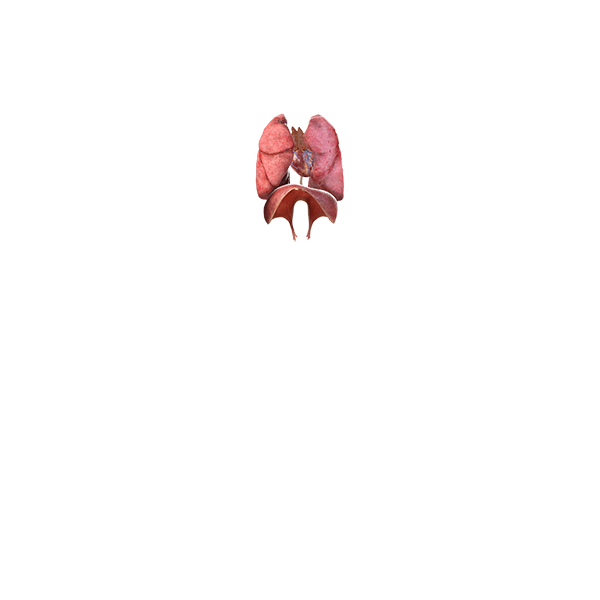
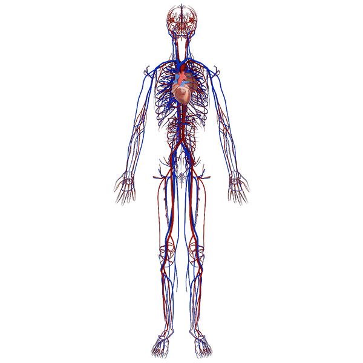
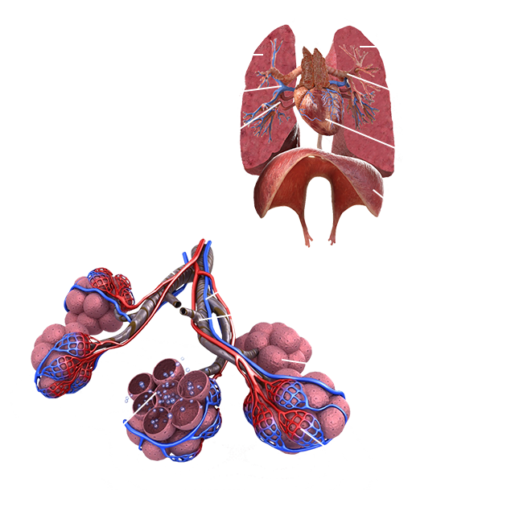
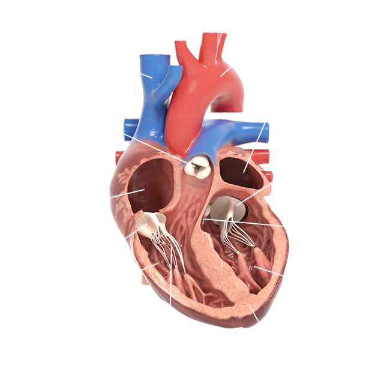

Секреты человека
☰
Главная
Органы Чувств
Мышцы и Кости
Органы и Пищеварение
Дыхание и Кровоток
Интересные факты
Дыхание и Кровоток
Легкие и диафрагма
Сердце и сосуды
 
Строение легких

Строение сердца
